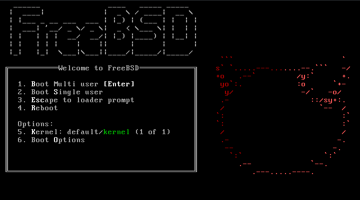

The hardware requirements to install FreeBSD vary by architecture.
Hardware architectures and devices supported by a FreeBSD release
are listed on the FreeBSD Release Information page. The FreeBSD
download page also has recommendations for choosing the correct
image for different architectures.
A FreeBSD installation requires a minimum of 96 MB of RAM and 1.5 GB
of free hard drive space. However, such small amounts of memory and
disk space are really only suitable for custom applications like
embedded appliances. General-purpose desktop systems need more
resources. 2-4 GB RAM and at least 8 GB hard drive space is a good
starting point.
amd64
This is the most common desktop and laptop processor type, used in
most modern systems. Intel® calls it Intel64. Other manufacturers
sometimes call it x86-64. Examples of amd64 compatible processors
include: AMD Athlon™64, AMD Opteron™, multi-core Intel® Xeon™, and
Intel® Core™ 2 and later processors.
i386
Older desktops and laptops often use this 32-bit, x86 architecture.
Almost all i386-compatible processors with a floating point unit are
supported. All Intel® processors 486 or higher are supported.
However, binaries released by the project are compiled for the 686
processor, so a special build will be needed for 486 and 586
systems. FreeBSD will take advantage of Physical Address Extensions
(PAE) support on CPUs with this feature. A kernel with the PAE
feature enabled will detect memory above 4 GB and allow it to be
used by the system. However, using PAE places constraints on device
drivers and other features of FreeBSD.
Booting on i386™ and amd64
These architectures provide a BIOS menu for selecting the boot
device. Depending upon the installation media being used, select the
CD/DVD or USB device as the first boot device. Most systems also
provide a key for selecting the boot device during startup without
having to enter the BIOS. Typically, the key is either F10, F11,
F12, or Escape.
-
The installation media was not inserted early enough in the boot
process. Leave the media inserted and try restarting the computer.
-
The BIOS changes were incorrect or not saved. Double-check that
the right boot device is selected as the first boot device.
-
This system is too old to support booting from the chosen media.
In this case, the Plop Boot Manager
(http://www.plop.at/en/bootmanagers.html) can be used to boot the
system from the selected media.
FreeBSD Boot Menu

Virtual Consoles and Terminals
Unless FreeBSD has been configured to automatically start a graphical
environment during startup, the system will boot into a command line
login prompt, as seen in this example:
FreeBSD/amd64 (pc3.example.org) (ttyv0) login:
Changing Console Video Modes
The FreeBSD console default video mode may be adjusted to 1024x768,
1280x1024, or any other size supported by the graphics chip and
monitor. To use a different video mode load the VESA module:
# kldload vesa
To determine which video modes are supported by the hardware, use
vidcontrol(1). To get a list of supported video modes issue the
following:
# vidcontrol -i mode
The output of this command lists the video modes that are supported by
the hardware. To select a new video mode, specify the mode using
vidcontrol(1) as the root user:
# vidcontrol MODE_279
The smallest unit of organization that FreeBSD uses to find files is
the filename. Filenames are case-sensitive, which means that
readme.txt and README.TXT are two separate files. FreeBSD does not use
the extension of a file to determine whether the file is a program,
document, or some other form of data.
Processes and Daemons
FreeBSD is a multi-tasking operating system. Each program running at
any one time is called a process. Every running command starts at
least one new process and there are a number of system processes that
are run by FreeBSD.
Each process is uniquely identified by a number called a process ID
(PID). Similar to files, each process has one owner and group, and the
owner and group permissions are used to determine which files and
devices the process can open. Most processes also have a parent
process that started them. For example, the shell is a process, and
any command started in the shell is a process which has the shell as
its parent process. The exception is a special process called init(8)
which is always the first process to start at boot time and which
always has a PID of 1.
Finding the System Hardware
Before editing the kernel configuration file, it is recommended to
perform an inventory of the machine’s hardware. On a dual-boot system,
the inventory can be created from the other operating system. For
example, Microsoft®'s Device Manager contains information about
installed devices.
If FreeBSD is the only installed operating system, use dmesg(8) to
determine the hardware that was found and listed during the boot
probe. Most device drivers on FreeBSD have a manual page which lists
the hardware supported by that driver. For example, the following
lines indicate that the psm(4) driver found a mouse:
psm0: irq 12 on atkbdc0 psm0: [GIANT-LOCKED] psm0:
[ITHREAD] psm0: model Generic PS/2 mouse, device ID 0
Since this hardware exists, this driver should not be removed from a
custom kernel configuration file. If the output of dmesg does not
display the results of the boot probe output, instead read the
contents of /var/run/dmesg.boot. Another tool for finding hardware is
pciconf(8), which provides more verbose output. For example:
% pciconf -lv ath0@pci0:3:0:0: class=0x020000 card=0x058a1014
chip=0x1014168c rev=0x01 hdr=0x00 vendor = 'Atheros Communications
Inc.' device = 'AR5212 Atheros AR5212 802.11abg wireless' class =
network subclass = ethernet
ecurity, whether physical or virtual, is a topic so broad that an
entire industry has evolved around it. Hundreds of standard practices
have been authored about how to secure systems and networks, and as a
user of FreeBSD, understanding how to protect against attacks and
intruders is a must. In this chapter, several fundamentals and
techniques will be discussed. The FreeBSD system comes with multiple
layers of security, and many more third party utilities may be added
to enhance security.
After reading this chapter, you will know:
- Basic FreeBSD system security concepts.
- The various crypt mechanisms available in FreeBSD.
- How to set up one-time password authentication.
- How to set up Kerberos on FreeBSD.
- How to configure IPsec and create a VPN.
- How to configure and use OpenSSH on FreeBSD.
- How to use file system ACLs.
Introduction
Security is everyone’s responsibility. A weak entry point in any
system could allow intruders to gain access to critical information
and cause havoc on an entire network. One of the core principles of
information security is the CIA triad, which stands for the
Confidentiality, Integrity, and Availability of information systems.
The CIA triad is a bedrock concept of computer security as customers
and users expect their data to be protected. For example, a customer
expects that their credit card information is securely stored
(confidentiality), that their orders are not changed behind the scenes
(integrity), and that they have access to their order information at
all times (availability).